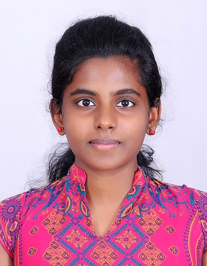

My Resume

Education
- B.E. in Electronics and Communication Engineering, Sri Ramakrishna Engineering College (Batch of 2024), CGPA: 8.59 (Current)
- HSC (Higher Secondary Certificate), Premier Vidya Vikas Higher Secondary School (2020), Percentage: 74%
- SSLC (Secondary School Leaving Certificate), Evangeline Matriculation Higher Secondary School (2018), Percentage: 96.8%
Area of Interest
- C Programming
- Embedded Systems
- Internet of Things
- Web Development
Projects
- Near Field Communication-based Smart Security System
- Mentor: Mr. T. Rajasekar, AP/ECE
- Pioneered an automated door lock and doorbell system, leveraging IoT and NFC technologies to deliver keyless access for superior security and user convenience.
- Driver Anxiety Reduction in Electric Vehicles
- Mentor: Mr. T. Rajasekar, AP/ECE
- Orchestrated the integration of machine learning methodologies to forecast energy consumption in Electric Vehicles, empowering owners with precise journey planning and alleviating range anxiety.
Proficiencies
- Proficient in Programming Languages: C, Embedded C, Python
- Adept in Software Utilization: Keil, Proteus, Arduino IDE, Energia IDE, MATLAB
Academic Accomplishments
- Successfully completed NPTEL courses on "Introduction in Machine Learning" and "Introduction to Wireless and Cellular Communication."
- Distinguished participant in the "Machine Learning Workshop" organized by Google Developers, MIT, Chennai.
- Completed the "Simulink Onramp" program by MATLAB.
- Attained distinction in the Business English Certificate Examination (BEC Preliminary) conducted by Cambridge.
Accolades and Recognitions
- Presented an erudite paper on "Reducing Driver's Range Anxiety for Electric Vehicles using Machine Learning" at ICCES 2023.
- Honored with the Winner's title in the Solution with Industry Partner category during the PRODIGI Innovation contest hosted by Cognizant.
- Garnered the Runners-up position in the prestigious Rigathon 2022 hackathon organized by Kumaraguru College Of Technology.
Core Competencies
- Adept Leadership
- Effective Communication
- Collaborative Teamwork
- Analytical Problem-solving
- Proficient Presentation and Writing Skills
- Prudent Decision Making
- Efficient Time Management
- Adaptive Agility
Participation
- A dedicated member of the esteemed Social Innovation Club (SIC)
- Active participation as a member of the Microsoft Learn Student Ambassadors (MLSA) club
Personal Information